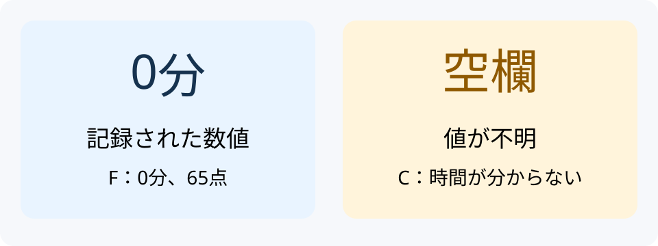
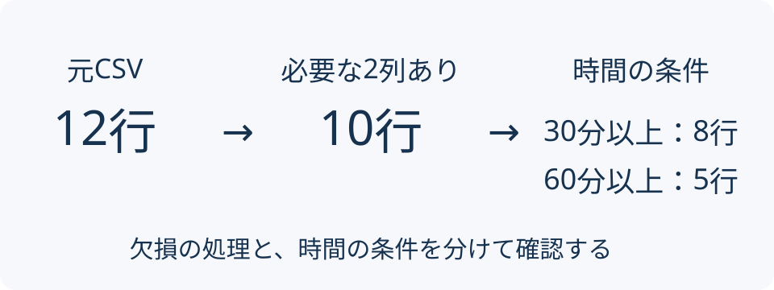

DSプログラミング入門2026｜前処理
0〜5分：準備
| これまで | 今日 |
|---|---|
| コードの中で表を作る | CSVを読む |
| 平均や図を作る | その前に値を確認する |
| 条件を変えて再実行 | 抽出条件を変えて照合 |
work をVS Codeで開く。exercises に lesson06
フォルダーを置く。data/study_records.csv を開く。成功の目印：列名とA〜Lの12記録。

空欄を見ただけで、0と決めない。
| ID | 場所 | 分 | 得点 |
|---|---|---|---|
| C | 自宅 | 空欄 | 80 |
| F | 図書館 | 0 | 65 |
| G | 自宅 | 60 | 空欄 |
| H | 空欄 | 75 | 85 |
今回使う値は、学習時間と得点。どの行を残す？
id,place,study_minutes,quiz_score
A,自宅,15,40
B,図書館,30,60
C,自宅,,80| 文字列 | 数値 |
|---|---|
id |
study_minutes |
place |
quiz_score |
文字列は名前、数値は計算に使う値。
5〜15分：読む前に予想
lesson06.py を開く。15〜30分：Python主例
| 確認する項目 | 期待する結果 |
|---|---|
| 表の大きさ | 12行4列 |
| IDの欠損 | 0件 |
| 場所・学習時間・得点の欠損 | 各1件 |
数値の空欄は NaN、文字列では <NA>
など。
lesson06.R を開いて保存する。表の飾りや表示桁数は違ってよい。
30〜45分：R主例

最後のCSVだけでなく、途中の10行も確認。
30分以上 → 60分以上
exercise06.py の30を60へ変える。exercise06.R でも同じ変更をする。45〜62分：予想・変更・実行
| ID | 分 | 時間 |
|---|---|---|
| D | 60 | 1 |
| H | 75 | 1.25 |
| J | 60 | 1 |
| K | 75 | 1.25 |
| L | 120 | 2 |
| 処理 | 起こること |
|---|---|
| 全列の欠損を除く | Hまで除かれる |
| 0を欠損とみなす | Fが途中で消える |
> 60 にする |
D・Jが除かれる |
エラーがないことだけでは確かめきれない。
依頼例：
必要な列は学習時間と得点です。場所が空欄の行を残す理由と、確認方法を一つ説明してください。
回答を読んだら、Hの元の値と結果を比べる。
62〜69分：説明・照合
ネット収集・スクレイピングは必須にしない。
69〜75分：形式の短い比較
A：学習時間の分布
平均・中央値・標本標準偏差＋ヒストグラム。
B：学習時間と得点の関係
両列の基本集計＋散布図。
75〜82分：前半レポートの案内
今回の60分以上の5行を流用しない。
提出：PDF・コード2本・分析CSV・図PNG
| 観点 | 点 |
|---|---|
| 目的に合う処理 | 30 |
| 検証 | 30 |
| 説明と解釈 | 30 |
| 再実行と提出 | 10 |
締切・提出先はClassroomで確認。
CSVの場所、残るID、保存結果を確認しよう。
82〜90分：提出・自己チェック・質問